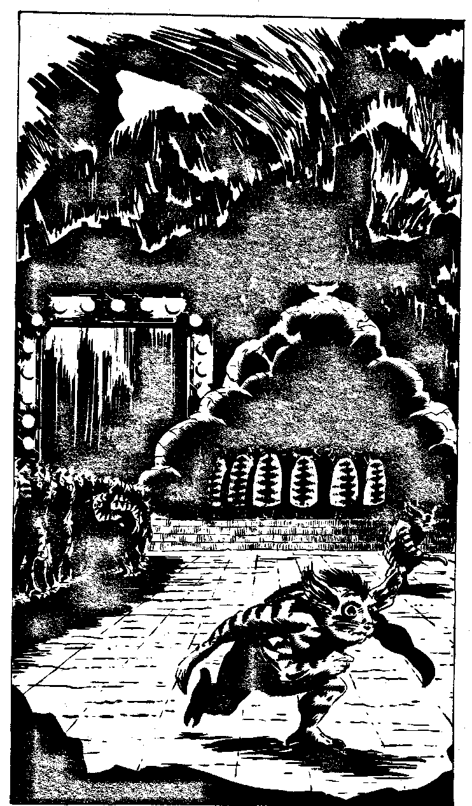

290
As you continue on, the twisting corridors carry an echo of trilling Noble voices and a much deeper resonant booming trill. Eventually, you come to the end of the tunnel without encountering anything. Hanging back in the shadows of the corridor you are able to survey the scene unseen. It is a large cavern, obviously the centre of the rebel territory. Over a hundred Warriors are standing in a tight block in the centre of the chamber. Burrowers and other Worker types are busying themselves with various tasks, digging, feeding the Warriors and so on. Several Nobles are conferring with the strangest sight of all in the far corner of the cavern. It is a huge pale bulbous mass of blubbery flesh. A small head rests atop the mass. This must be what a Caver Queen looks like. One of the Nobles is speaking: The offensive is going well, Baal-Mother. These devices you have given us,' pointing to a laser pistol, 'will assure our victory. But we are worried, you have not yet laid a Batch, is there something wrong, Mother? We are in need of replacements.'
The huge mass speaks, with the deep resonant sound you heard earlier: 'All in good time, Batch 16-A4-13. All in good time. Just ensure my place as rightful Mother of Darkhome.' Your attention wanders from this conversation when you notice a stack of advanced machinery next to the bloated mass, something that should not be here at this time. You also notice, almost directly opposite you, a huge door, about eighteen feet in height. It is of a shiny metal, and surrounded by domed lights glowing dully. It is jarringly out of place in a culture that has not yet discovered the wheel. As you look at the door you begin to pick up some kind of psionic static from it. After a few minutes' concentration, you are able to tell that the piece of the Rack you are looking for lies behind the door! Do you have a piece of the Rack with small circles at each of its three corners with you? If you do, turn to 391. If you do not, turn to 385.